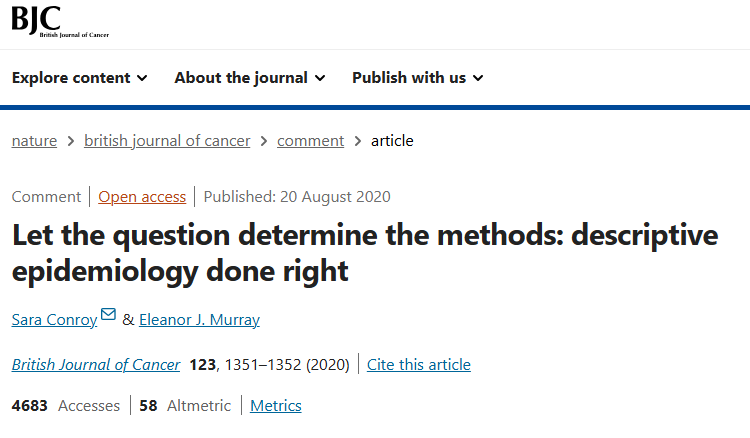

3 Tareas científicas
Quisiera comenzar esta sección citando a Conroy et al. 2020 “Deja que la pregunta determine los métodos”

Comentario realizado
“En 2017, Pedersen et al.. publicaron un estudio que exploró la posible asociación estadística entre el hombro congelado y el diagnóstico de cáncer. Recientemente, la discusión de este artículo en Twitter criticó a los autores por no controlar los factores de confusión. Pero, ¿qué significa controlar los factores de confusión y cuándo realmente necesitamos hacerlo?”
La confusión se define típicamente como una variable que está relacionada tanto con la variable principal de interés como con el resultado, pero que no está en la vía causal.
La decisión de controlar un factor de confusión depende de la pregunta científica específica y, por lo general, ocurre cuando el enfoque de la pregunta de investigación es investigar una relación causal entre la variable principal de interés y el resultado. Sin embargo, no todas las investigaciones requieren una pregunta causal. Para entender el propósito de un estudio (es decir, descriptivo, causal o predictivo), es fundamental que se expliquen claramente los objetivos de la investigación. El artículo de Pedersen es un gran ejemplo de un estudio con una pregunta de investigación que no es causal y, por lo tanto, no necesita controlar los factores de confusión.
3.1 Tipos de Tareas Científicas
En la investigación científica, cada estudio debe estructurarse en función de su objetivo, los datos disponibles y la pregunta que pretende responder. De esta manera, podemos categorizar los estudios en distintos tipos de tareas científicas.
Tareas Descriptivas
Tareas Predictivas
Tareas Explicativas o de Inferencia Causal
¡Consejo!
Esta clasificación de los diferentes tipos de estudios llegará a tener más sentido y utilidad al momento de direccionar los análisis estadísticos.
Warning!
Es posible que muchos docentes o investigadores te hayan mencionado:
Unicamente los ensayos clínicos pueden evaluar causalidad
En estudios de descripción no se puede calculas medidas de asociación, como Riesgo Relativo (RR)
Todo análisis de asociación requiere ajustar o controlar por confusores.
Los análisis descriptivos no son importantes para tomar decisiones
Sin embargo, en las siguientes sesiones desmentiremos muchos de estos comentarios.
3.2 Referencias
Conroy, S., Murray, E.J. Let the question determine the methods: descriptive epidemiology done right. Br J Cancer 123, 1351–1352 (2020). https://doi.org/10.1038/s41416-020-1019-z
Pedersen, A., Horváth-Puhó, E., Ehrenstein, V. et al. Frozen shoulder and risk of cancer: a population-based cohort study. Br J Cancer 117, 144–147 (2017). https://doi.org/10.1038/bjc.2017.146
Lesko CR, Fox MP, Edwards JK. A Framework for Descriptive Epidemiology. Am J Epidemiol. 2022;191(12):2063-2070. doi:10.1093/aje/kwac115
Hernán, M. A., Hsu, J., & Healy, B. A Second Chance to Get Causal Inference Right: A Classification of Data Science Tasks. CHANCE, 2019; 32(1), 42–49. https://doi.org/10.1080/09332480.2019.1579578
3.3 Disclaimer
- Esta sección fue editada usando ChatGPT.